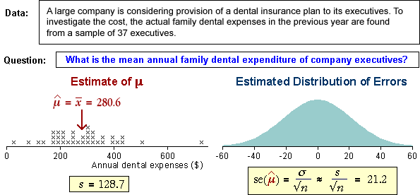

| standard error = σerror = |
Theory
We have seen that the error when using a sample mean has a distribution with mean and standard deviation,
bias = μerror = 0
| standard error = σerror = |
Unknown population standard deviation
In most applications where a population mean is estimated, the value of σ is unknown. We must therefore replace it by the sample standard deviation, s, in the formula.
| standard error = σerror = |
Warning
Standard statistical notation is a little confusing here. The term "standard
error" is used for both the theoretical
standard deviation of the errors and for
our best estimate of it.
Examples
Estimation of a population mean with the mean of a random sample occurs so often it is worth giving a few examples.
Examples
The following data sets were collected to provide information about underlying populations whose characteristics were unknown. In each case, the sample mean provides an estimate of the population mean and the standard error gives information about the accuracy of this estimate.

The blue normal distribution approximates the normal distribution of the errors and the standard error summarises the accuracy of the estimate.
Use the pop-up menu to display the error distribution for other data sets.